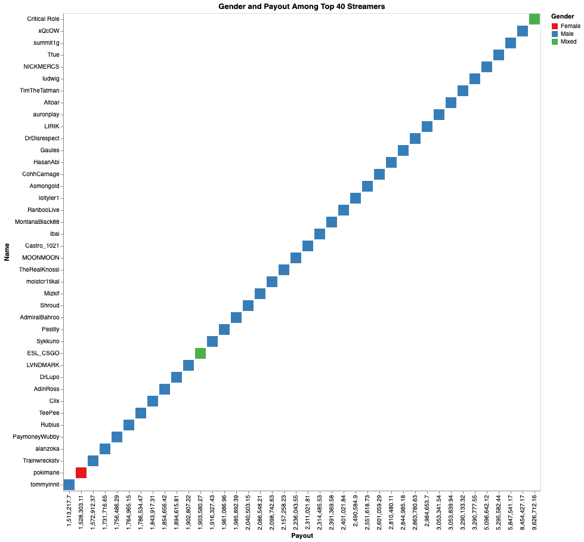

by Diana Bravo
Twitch streaming is a relatively new phenomenon, with rapidly growing audiences paying to subscribe to their favorite streamers. Streamers have used the platform to raise millions of dollars for charities and politicians alike. Even New York Congressional Rep. Alexandria Ocasio-Cortez streamed herself playing the popular social deduction game “Among Us” to raise money for progressive Democratic candidates during the 2020 election.
The Amazon-owned platform can be lucrative for popular streamers, paying out millions of dollars to those who use the platform to cultivate large communities. However, the overwhelming majority of these popular creators are men. According to leaked payment data from Dot Esports, the majority of women among the 40 highest earning streamers belong to groups that include male co-streamers.

Of the 40 top-earning streamers, only 3 include women
Beyond that, the highest-earning solo female streamer, Pokimane, is the 39th-highest earning streamer overall. Her relatively high position comes with a higher rate of online harassment that’s shared by other female gamers per a study by casino.org.
Streamers can earn millions of dollars depending on their success
Despite these high payout numbers, Twitch faces some competition from Youtube’s live-streaming platform. On Twitch, smaller creators split their revenue about 50% with the platform while larger creators take home about 70% of their earnings. However, should Twitch decide to give all creators regardless of size a 50-50 split, more streamers might make the jump to YouTube, which gives all its creators a 70-30 split.
Regardless of what happens in the platform duel between Twitch and Youtube, the story of internet live streaming and the careers of female streamers remains in its infancy, and this story will no doubt develop with time.